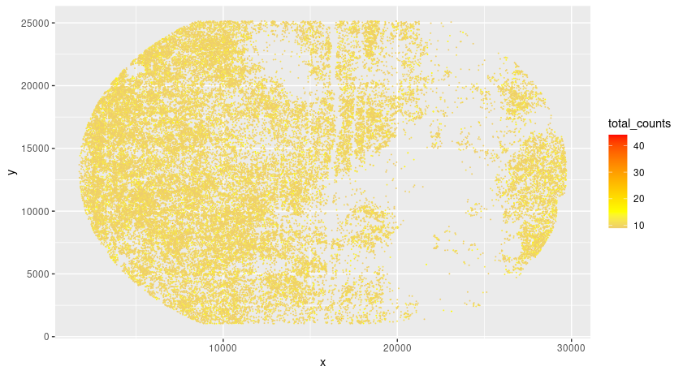
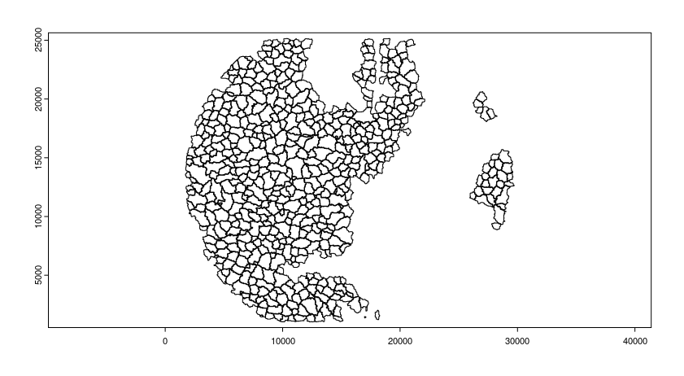
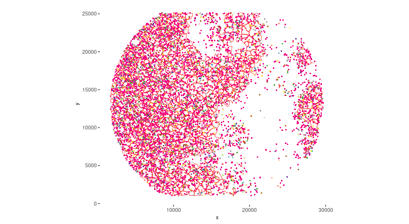
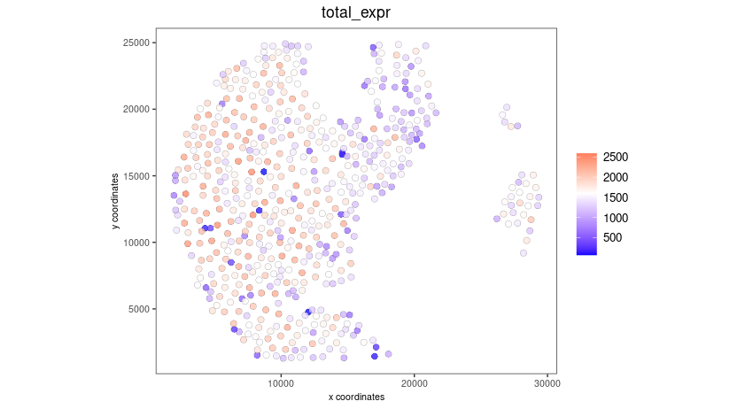
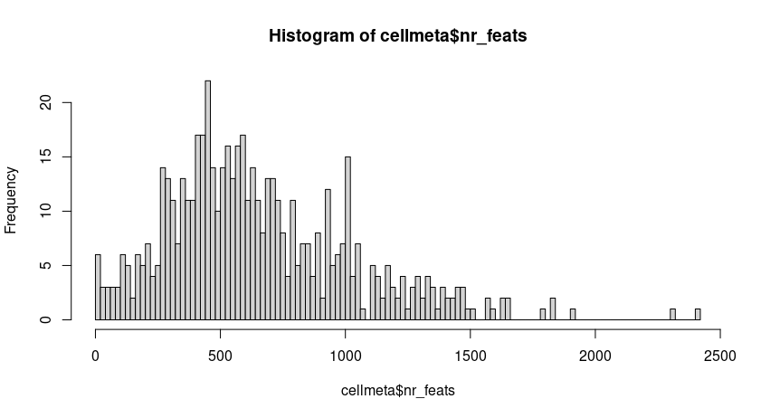
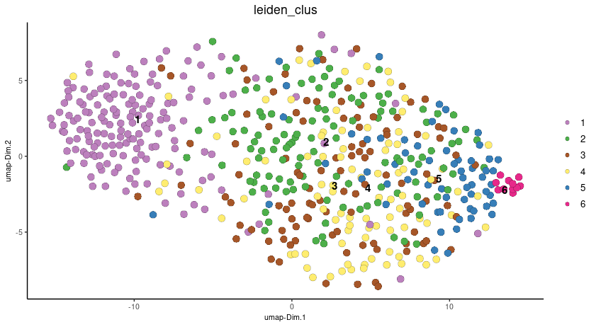
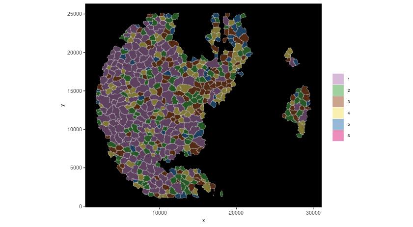
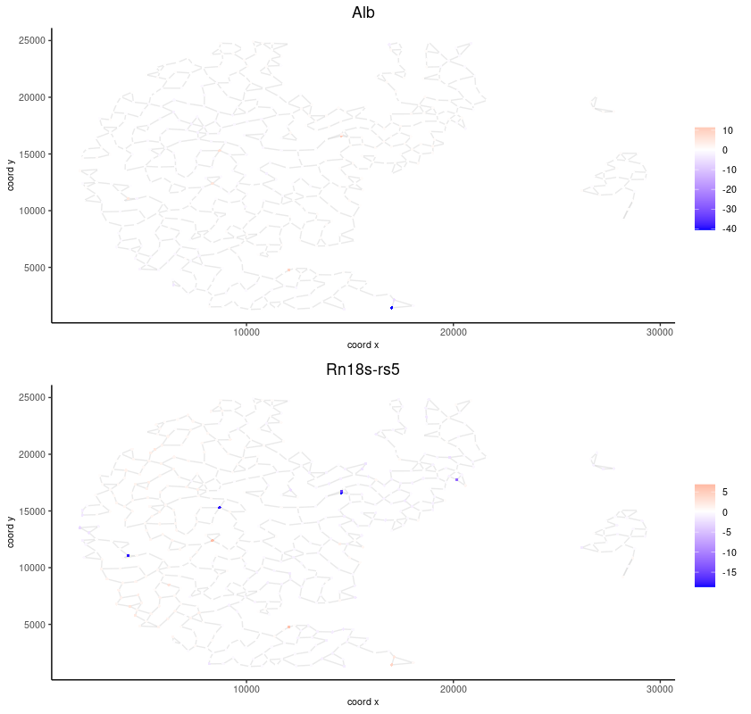

1 Dataset explanation
Seqscope is a illumina sequencing based spatial sequencing platform developed by Jun Hee Lee Lab. The basic strategy is to use illumina sequencing by synthesis to generate the spatial barcodes and use the barcodes to capture mRNAs in tissue.
1.1 Example Raw Data needed for seqscope:
1st-seq data (single-ended, for generating spatial barcodes)
- SeqScope_1st.fastq.gz 2nd-seq data (pair-ended, for generating count matrix)
- SeqScope_2nd_R1.fastq.gz
- SeqScope_2nd_R2.fastq.gz
Image (for seqmentation)
- Tile_No_Segmented.png
1.2 Preprocessing to generate count matrix
Seqscope has its own pipeline to generate the count matrix(Gene barcode). Please refer to their github page or use customized methods to proceed.
# Note you need to install seqtk, STARsolo and clone their github page first. All bash scripts are stored in script directory of their github.
## First generate the whitelist of spatial barcodes:
bash extractCoord.sh [SeqScope_1st.fastq.gz] [SeqScope_2nd_R1.fastq.gz] [HDMI_length]
## Second, generating the count matrix via STAR.Solo:
bash align.sh [SeqScope_2nd_R1.fastq.gz] [abc_SeqScope_2nd_R2.fastq.gz] [HDMI_length] [whitelists.txt] [outprefix] [starpath] [seqtkpath] [geneIndex]You should now have the count matrix for Giotto Object. Note the Spatial Barcodes are typically at 0.6 um resolution. One way to analyze is to use the getSimpleGrid.R or getSlidingGrid.R provided by Lee Lab to bin the counts and simply follow the Giotto analysis steps of Visium and Integration of Visium
2 Start Giotto
# Ensure Giotto Suite is installed.
if(!"Giotto" %in% installed.packages()) {
pak::pkg_install("giotto-suite/Giotto")
}
# Ensure the Python environment for Giotto has been installed.
genv_exists <- Giotto::checkGiottoEnvironment()
if(!genv_exists){
# The following command need only be run once to install the Giotto environment.
Giotto::installGiottoEnvironment()
}3 Set up Giotto Environment
library(Giotto)
# 1. set working directory
results_folder <- "/path/to/results/"
# 2. set giotto python path
# set python path to your preferred python version path
# set python path to conda env/bin/ directory if manually installed Giotto python dependencies by conda
# python_path = "/path_to_conda/.conda/envs/giotto/bin/python"
# set python path to NULL if you want to automatically install (only the 1st time) and use the giotto miniconda environment
# python_path = NULL
#if(is.null(python_path)) {
# installGiottoEnvironment()
#}
# 3. create giotto instructions
instructions <- createGiottoInstructions(save_dir = results_folder,
save_plot = TRUE,
show_plot = FALSE,
return_plot = FALSE)4 Create Giotto Subcellular Object
In order to do single cell and subcellular analysis with Giotto, we suggest using the GiottoSubcellular Object. Giotto Subcellular objects take cell polygons and a Giotto Point file (a data.table contains Gene Name, Expression, x, y, etc). Therefore, first we need to do some transformation of the count matrix.
Giotto Point file formatting
Unlike normal cell by gene matrix, a Giotto Point file is usually a data.table contains Gene Name, Expression, x, y, where each row represent a subcellular point. For Seqscope data, one HDMI typically have more than one subcellular point.
Example Giotto Point file for Seqscope
| HDMI | Feat_ID | Count | sdimX | sdimY |
|---|---|---|---|---|
| HDMI1 | GeneA | |||
| HDMI1 | GeneB | |||
| HDMI2 | GeneA | |||
| HDMI3 | GeneC |
4.1 Process Giotto Point file per tile
##expression matrix
data_path <- "/path/to/Solo.out/GeneFull/raw/"
expr_matrix <- Giotto::get10Xmatrix(path_to_data = data_path,
gene_column_index = 2)
##Spatial coordinates
spatial_coords_Dir <- "/path/to/extractCoord.sh/results/spatialcoordinates.txt"
spatial_coords <- fread("spatial_coords_Dir")
colnames(spatial_coords) <- c("HDMI","Lane","Tile","X","Y")
##Prepare Giotto Point
# Subset expression and spatial info by tile
spatial_coords_tile <- spatial_coords[Tile == "2104"]
expr_matrix_tile <- expr_matrix[, as.character(colnames(expr_matrix)) %in% spatial_coords_tile$HDMI]
# convert expression matrix to minimal data.table object
matrix_tile_dt <- as.data.table(Matrix::summary(expr_matrix_tile))
genes <- expr_matrix_tile@Dimnames[[1]]
samples <- expr_matrix_tile@Dimnames[[2]]
matrix_tile_dt[, gene := genes[i]]
matrix_tile_dt[, hdmi := samples[j]]
# merge data.table matrix and spatial coordinates to create input for Giotto Polygons
gpoints <- merge.data.table(matrix_tile_dt,
spatial_coords_tile,
by.x = "hdmi", by.y = "HDMI")
gpoints <- gpoints[,.(hdmi, X, Y, gene, x)]
colnames(gpoints) <- c("hdmi", "x", "y", "gene", "counts")4.2 Prepare the polygon mask file
Giotto can read in a variety of different mask files provided by common segmentation tools. But first we need to check if we need to filp the x and y axis.
# check total counts per hdmi
gpoints_aggr <- gpoints[, sum(counts), by = .(hdmi, x, y)]
colnames(gpoints_aggr) <- c("hdmi","x","y","total_counts")
setorder(gpoints_aggr, -total_counts)
pl <- ggplot()
pl <- pl + geom_point(data = gpoints_aggr[total_counts < 1000 & total_counts > 8],
aes(x = x, y = y, color = total_counts), size = 0.05)
pl <- pl + scale_color_gradient2(midpoint = 15, low = "blue", mid = "yellow", high = "red")
pl
Read polygon mask file
segmentation_mask <- "/path/to/segmentation.tif"
final_polygons <- createGiottoPolygonsFromMask(segmentation_mask,
flip_vertical = FALSE,
flip_horizontal = FALSE)
plot(final_polygons)
Polygon mask file manual formatting
However, sometimes Giotto does not read in the provided mask file and we will need a manual processing for the mask file and we will do that using terra and createGiottoPolygonsFromDfr.
raster <- terra::rast(x = segmentation_mask)
terra_polygon <- terra::as.polygons(x = raster, value = TRUE)
# convert polygon to data.table and remove unwantedly detected polygons (e.g. canvas etc)
dt <- GiottospatVector_to_dt(terra_polygon)
npolygons <- length(levels(factor(dt$part))) - 1
filter_dt <- dt[geom == 1 & hole == 0 & part %in% c(0:npolygons), .(x,y,part)]
filter_dt[, part := as.factor(part)]
# create new polygons from filtered data.table
final_polygons <- createGiottoPolygonsFromDfr(segmdfr = filter_dt)
# create giotto points first to get the extent of the points (hdmi)
original_points <- createGiottoPoints(x = gpoints[,.(x, y, gene, hdmi, counts)])
original_feat_ext <- ext(original_points@spatVector)
# convert polygon to spatRaster to change extent to that of original points
final_spatraster <- Giottopolygon_to_raster(polygon = final_polygons@spatVector)
ext(final_spatraster$raster) <- original_feat_ext
final_polygons@spatVector <- as.polygons(final_spatraster$raster)
final_polygons@spatVector$poly_ID <- final_spatraster$ID_vector[final_polygons@spatVector$poly_i]
# flip and shift, if needed
#final_polygons@spatVector = flip(final_polygons@spatVector)
#yshift = ymin(original_feat_ext) - ymax(original_feat_ext)
#final_polygons@spatVector = terra::shift(final_polygons@spatVector, dy = -yshift)
plot(final_polygons)4.3 Create Giotto Object
Add a random jitter to the HDMI location to make a pseudo-in situ transcript file.
# add giotto points class
gpoints_subset <- gpoints[hdmi %in% gpoints_aggr[total_counts > 5]$hdmi]
# multiply rows with multiple counts and add jitter
gpoints_extra <- gpoints_subset[counts > 1]
gpoints_extra <- gpoints_extra[,rep(counts, counts), by = .(hdmi, gene, x, y)]
gpoints_extra <- rbind(gpoints_extra[,.(hdmi, gene, x, y)], gpoints_subset[counts == 1 ,.(hdmi, gene, x, y)])
jitter_x <- sample(1:3, size = nrow(gpoints_extra), replace = TRUE)
jitter_y <- sample(1:3, size = nrow(gpoints_extra), replace = TRUE)
gpoints_extra[, x := x + jitter_x]
gpoints_extra[, y := y + jitter_y]
# add subcellular information
seqscope <- createGiottoObjectSubcellular(gpoints = list(gpoints_extra[,.(x, y, gene, hdmi)]),
gpolygons = list(final_polygons),
instructions = instructions)
# add centroids
seqscope <- addSpatialCentroidLocations(seqscope,
poly_info = "cell")
#Overlap to Polygon information
seqscope <- calculateOverlapRaster(seqscope)
seqscope <- overlapToMatrix(seqscope)
# Visualize top 200 expressed genes in situ
spatInSituPlotPoints(seqscope,
show_legend = FALSE,
show_image = FALSE,
feats = list("rna" = seqscope@feat_info$rna@spatVector$feat_ID[1:200]),
spat_unit = "cell",
point_size = 1,
show_polygon = TRUE,
use_overlap = FALSE,
polygon_feat_type = "cell",
polygon_color = "red",
polygon_bg_color = "white",
polygon_line_size = 0.2,
coord_fix_ratio = TRUE,
background_color = "white")
5 Process Giotto and Quality Control
# filter
seqscope <- filterGiotto(gobject = seqscope,
expression_threshold = 1,
feat_det_in_min_cells = 5,
min_det_feats_per_cell = 5)
#normalize
seqscope <- normalizeGiotto(gobject = seqscope,
scalefactor = 5000,
verbose = TRUE)
# add statistics
seqscope <- addStatistics(gobject = seqscope)
# View cellular data
# pDataDT(seqscope)
# View rna data
# fDataDT(seqscope)
spatPlot2D(gobject = seqscope,
cell_color = "total_expr",
color_as_factor = FALSE,
show_image = FALSE,
point_size = 2.5,
point_alpha = 0.75,
coord_fix_ratio = TRUE)

6 Dimension Reduction
# cluster cells
seqscope <- calculateHVF(gobject = seqscope,
HVFname = "hvg_orig")
seqscope <- runPCA(gobject = seqscope,
expression_values = "normalized",
scale_unit = TRUE,
center = TRUE)
seqscope <- runUMAP(seqscope, dimensions_to_use = 1:100)7 Cluster
seqscope <- createNearestNetwork(gobject = seqscope,
dimensions_to_use = 1:100,
k = 5)
seqscope <- doLeidenCluster(gobject = seqscope,
resolution = 0.9,
n_iterations = 1000)
# visualize UMAP cluster results
plotUMAP(gobject = seqscope,
cell_color = "leiden_clus",
show_NN_network = FALSE,
point_size = 3.5)
spatInSituPlotPoints(seqscope,
show_polygon = TRUE,
polygon_color = "white",
polygon_line_size = 0.1,
polygon_fill = "leiden_clus",
polygon_fill_as_factor = TRUE,
coord_fix_ratio = TRUE)
8 Find spatial genes
seqscope <- createSpatialNetwork(gobject = seqscope,
minimum_k = 2,
maximum_distance_delaunay = 100)
km_spatialfeats <- binSpect(seqscope,
subset_feats = seqscope@feat_ID$rna)
spatFeatPlot2D(seqscope,
expression_values = "scaled",
feats = km_spatialfeats$feats[1:2],
cell_color_gradient = c("blue", "white", "red"),
point_shape = "border",
point_border_stroke = 0.01,
show_network = TRUE,
network_color = "lightgrey",
point_size = 1.2,
cow_n_col = 1)